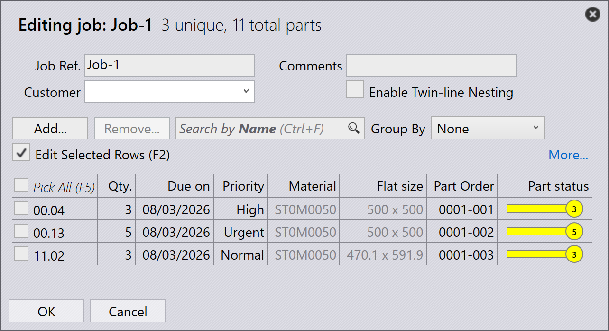

Job 檢視
本節說明 Job 檢視中可用的不同檢視，包括 Jobs、Parts、Nests、Edit、Simulate 和 Export。
Jobs
選取 jobs 選項會顯示目前軟體中設定的所有 job 清單。您可以雙擊 job 以檢視其詳細資料，或按右鍵以存取其他選項。
-
Job 以圖塊檢視顯示，每個 job 都會連同基本屬性顯示，例如 Job ID、 Job Ref、客戶名稱、總零件數、交付日期、Job 狀態列等。
-
每個 job 圖塊也會以堆疊卡片格式顯示零件圖像。您可以使用滑鼠滾輪 瀏覽 job 中的所有零件。

Job 詳細資料
-
雙擊圖塊或選取圖塊後按 Enter 鍵，可將檢視切換至詳細模式。
-
詳細資料頁面會顯示零件清單，以及 nesting 後的板材 （layout）（如果有）。
-
使用上/下方向鍵在詳細資料頁面中切換 job。
-
將滑鼠滾輪置於零件堆疊上滾動，會在零件清單和 layout 中都標示 該零件。
-
選取 layout 會標示該 layout 及其上 nesting 的所有零件於零件 清單中。標示會在一分鐘後自動關閉。

-
Nest summary：
-
Parts：顯示 job 中訂單項目的總數和 總數量。
-
Sheets：顯示 nesting 後板材的總數連同 板材總數量。
-
-
Work Steps：
-
Bending：顯示所分配的機床及其待處理的訂單 數量。
-
Cutting：顯示所分配的機床及其待處理的訂單 數量。
-
優先順序
-
首先，點選螢幕左側的 Jobs 圖示，選取您要編輯的 job，然後 點選螢幕右側的 edit（確保已選取 Jobs 選項）。
-
或者，在選取的 job 上按右鍵並點選 Check-out the document for editing 圖示。
-
當您點選 edit 時，會出現編輯 job 視窗。在此視窗中，您可以設定 或變更 job 的優先順序。

-
根據 job 零件的優先順序，job 圖塊中的 Job Reference 會相應地 進行顏色陰影。
-
Job 零件首先按優先順序排序，然後再按交付日期排序。它們也會 根據優先順序進行顏色陰影。
-
進行 nesting 時，Urgent 零件會優先考慮，接著是 High，然後是 Normal，最後將 Low 優先零件放置於 nest 板材上的剩餘空間。
-
Nest 板材也會根據優先順序排序並進行顏色陰影。
| Job 優先順序 | 顏色說明 |
|---|---|
|
Urgent |
|
Normal |
|
High |
|
Low |


狀態
-
Job 狀態列使用顏色代碼來表示 job 的進度或狀況，依據已處理或 剩餘的數量。
-
Job 中的零件和 nest 板材也會以相符的顏色標示，以反映它們在整體 JOB 中的個別狀態。
-
顏色編碼可改善追蹤，並確保操作員能一目了然地看到生產 狀態。
| Job 狀態 | 說明 |
|---|---|
|
Not ready |
|
Nesting |
|
Ready |
|
Bend Planned |
|
Sheet missing |
|
Bending queue |
|
Cutting Queue |
|
Done(Completed) |


Parts
Active Parts 檢視會顯示目前在 active job 中正在進行中的所有零件。
每個零件以圖塊形式表示，顯示關鍵詳細資料，例如零件名稱、 尺寸、材料、厚度、數量和交付日期。也會顯示零件的視覺預覽。
此檢視有助於使用者監控個別零件的處理狀態，並追蹤它們在進行中的 job 中的進度。
Nests
Active Nests 檢視會顯示目前在 active job 中正在進行中的所有 nest。
每個 nest 會連同相關詳細資料一併表示，例如零件數量和處理狀態。 也會顯示 nesting 零件的視覺 layout。
此檢視有助於使用者監控 nesting 進度，並追蹤零件如何在板材上排列 和處理。
Edit
Edit 選項允許您修改所選取的項目。
根據目前的檢視，所選取的實例會開啟供編輯：
-
在 Jobs 檢視中，所選取的 job 會開啟供編輯。
-
在 Active Parts 檢視中，所選取的零件會開啟供編輯。
-
在 Active Nests 檢視中，所選取的 nest 會開啟供編輯。
Export csv
Export 選項讓您選取 job 資訊並將其匯出至 CSV 檔。
-
點選 jobs 圖示。
-
點選螢幕右側的 export 選項。
-
會出現一個對話方塊，顯示可用的欄位：
-
選取您要匯出的欄位的核取方塊。
-
如果您想依選取的欄位對資料進行群組，請使用 Group By 選項。
-
點選 Export 以產生 CSV 檔。
其他資訊
螢幕右側還有三個其他圖示，分別是 Simulate、Goto 和 Back。
-
Simulate 會開啟所選取的項目以進行更詳細的檢視。
-
Goto 會將焦點切換並顯示在所選取的零件或 nest 上。
-
Back 會從您目前所在的位置往回一層，例如在模擬過程中 點選 Back 會將您帶回主 job，從 job 則會將您帶回 主 jobs 顯示。